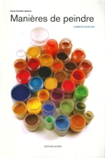
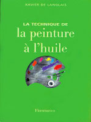

Bibliographie
Ne figurent ici que les ouvrages qui nous
ont réellement convaincus parmi une offre très riche, trop riche peut-être.
Toute proposition est vraiment bienvenue, mais sans garantie d'insertion.
A lire absolument : cette liste
remarquablement complétée
ici.
|
Manières de peindre, carnets d'atelier,
Jean-Pierre Brazs, 2011, éditions Notari, Genève. Tout y est ! C'est la
pratique - ou plutôt les pratiques - de la peinture sur la base d'un
intérêt soutenu porté au matériau pictural. La démarche est très
sensiblement partagée avec celle de Dotapea mais se présente d'une part
comme une approche "transversale" dans le sens où elle évoque l'usage
dans les faits des produits et des phénomènes et d'autre part comme de
nouvelles propositions synthétiques du plus haut intérêt.
Un must. |
|
|

|
| La technique de la peinture à l'huile, Xavier DE LANGLAIS,
1959 et ult., Flammarion. Une référence fondamentale qui a l'avantage d'être concise et peu coûteuse. La
contribution de cet ouvrage à l'art pictural est, ni plus ni moins, essentielle. Xavier
de Langlais, à travers son livre, continue à former des artistes - du Japon à
l'Armorique - et représente toujours un recours, une présence amicale et
salutaire pour les peintres professionnels. Une annexe est
consacrée aux peintures acryliques et vinylique.
|
|
|

|
Couleurs, pigments et teintures dans les mains des peuples,
Anne
VARICHON,
Seuil octobre 2000. Un superbe ouvrage, des informations aussi passionnantes que
pertinentes. Un livre de rêve et un vrai must.
Exceptionnel et précieux. Nous adorons et conseillons sans la moindre réserve
ce remarquable ouvrage de référence.
Signalons par ailleurs sur ArtRéalité.com un texte collectif auquel l'auteure a
participé : Des teintures, de la pourpre... et de la couleur comme
nourriture,
cliquer ici. |
|
|
|
|
Traité des couleurs,
Libero ZUPPIROLI, Marie-Noëlle BUSSAC, 2001, Presses Polytechniques
et Universitaires Romandes (PPUR). Lausanne, Confédération Helvétique. Une
précieuse approche scientifique sur le thème de la couleur, de la perception et
de l'évolution.
|
|
|
|
| Dictionnaire des matériaux du
peintre, François Perego, 2005, Belin, Paris. C'est une référence
hors de l'ordinaire, véritablement un must dans le domaine de la peinture. |
|
|
|
| Dictionnaire technique de la peinture,
André Béguin. Six tomes initialement, refondus
en deux (A-I et J-Z) aux Editions André Béguin. L'oeuvre a été créée sur une longue
période, à la charnière des années 70 et 80. Une nouvelle édition a été publiée
en 2001. Signalons le lien
andre.beguin.free.fr/html/technique/index.htm#peinture. |
|
|
|
| Technique de la peinture, Que sais-je ?,
Jean Rudel, 1974-1999, Presses Universitaires de France, Paris. Un très bon
ouvrage. |
|
|
|
| La Peinture à partir du matériau brut et le rôle de
la technique dans la Création d'Art, Nicolas Wacker, 1998, éditions
Allia, Paris. Une référence de premier plan. |
|
|
|
Artist's handbook of materials and techniques,
Ralph Mayer, 1940 et ult., Viking Books. Une
référence chaudement conseillée par Hugues Delbergue, webmaster de
l'excellent ETFA (http://eggtempera.free.fr/fr).
Il est difficile de se procurer cet ouvrage en France. Le plus simple est
d'utiliser le site d'achat en ligne de L'University Bookstore de Washington.
Accès direct à l'ouvrage : cliquer
ici. |
|
|
|
|
Peindre et décorer au
naturel, Nathalie Boisseau, 2009, Editions Alternatives, Paris.
Beaucoup de talent dans ce petit livre. Le talent de donner envie, par quelques
mots et quelques images, d'essayer des procédés aussi tentants que le badigeon à
la brique et à la farine de sarrasin, la peinture à l'argile, la lasure à la
bière, la patine à l'huile d'olive, ... Une belle synthèse et un bel esprit de
découverte. Très agréable à lire... et à essayer. |
|
|
|
|
Couleur, manuel pratique pour l'artiste,
Simon Jennings, 2005, Dessain et Tolra. Une approche pédagogique qui brille par
sa concision. Beaucoup d'informations sont fort bien regroupées et synthétisées
dans cet ouvrage de taille pourtant modeste. |
|
|
|
| Un ouvrage sur internet :
Lisière, de Patrick
Depoix. Remarquable travail sur les sources possibles
d'approvisionnement en matériaux destinés à la peinture. Formidable et
utile. Bravo !
|
|
|
|
|
Le monde des teintures
naturelles, Dominique Cardon, 2003, Belin (cf.
http://www2.cnrs.fr/presse/journal/853.htm). Une référence dans le monde de
la teinture et des couleurs naturelles. |
|
|
|
|
Techniques picturales anciennes - peintures décoratives
et artistiques, Jean-Claude Misset, 2000, Editions Charles Massin. Un
bon petit livre synthétique et fort instructif sur les techniques de fresque, du
badigeon, etc. |
|
|
|
| Qu'est-ce que l'esthétique ?,
Marc JIMENEZ,
1997, 2002, Folio Essais. Un ouvrage lumineux, accessible aux non-philosophes.
Jimenez aborde sous un angle historique de nombreux questionnement sur l'art au
travers des réflexions des auteurs et des artistes de tous temps. On lira notamment "(...) le
retard de l'esthétique n'est pas un handicap ; venir après les oeuvres
signifie qu'elle prend le temps de réfléchir sur son histoire passée et
présente. Au moment où l'art d'aujourd'hui perd, dit-on, tous ses repères et
ses critères, un tel retard devient même un privilège."
(p. 28)
|
|
|
|
| Le guide de la peinture décorative,
Kevin Mac
Cloud, 1997, Armand Colin, 12 av. d'Italie, 75013 Paris. Ouvrage
très instructif dont l'intérêt déborde largement du seul domaine de la décoration. On peut
reprocher de petits défauts du côté de la traduction, empreinte d'anglicismes
prêtant parfois à de graves confusions et contresens. Il y a de quoi être
surpris lorsque l'on lit : "Le médium huile n'est pas vraiment un liant
comme les gélatines. Ces dernières ne sont qu'un additif , tandis que l'huile
forme l'essentiel de la peinture. Elle est plutôt le "véhicule" des
pigments." !!! Les concepts anglo-saxons ne peuvent être ainsi
transposés. Nous notons par ailleurs quelques opinions alarmistes concernant
les dangers des substances, souvent non confirmées par les centres de
recherches et institutions officielles. Ce livre est cependant d'un intérêt de premier plan. |
|
|
|
| Techniques du latex,
Jean-Pierre DELPECH, Marc-André FIGUERES, Nicole MARI, 2002, Eyrolles. C'est un ouvrage de
référence bien construit et bien documenté. |
|
|
|
| Terres et glaçures,
Daniel RHODES,
1999, Dessain & Tolra. Consacré à la poterie, cet ouvrage concerne en
fait de nombreuses disciplines artistiques. Ouvrage très précis, quasi
professionnel - et bien connu dans la profession -, parvenant cependant à maintenir l'intérêt du
profane grâce notamment aux illustrations et à une construction intelligente. |
|
|
|
| Pratique des émaux de grès,
Daniel de MONTMOLLIN, éditions La revue de la céramique et du verre. Grand ouvrage
technique de référence pour qui travaille à haute température. |
|
|
|
| Le métier du peintre,
Pierre
GARCIA, 1990, 1994, Dessain & Tolra,
Paris. Il existe une version abrégée et une version complète, nettement plus
volumineuse, que nous n'avons pas eu l'occasion de consulter. L'abrégé est
assez intéressant car il évoque des aspects du... métier qui sont
boudés par la plupart des auteurs. |
|
|
|
| L'art de la composition et du cadrage, DUC, 1992 et ult., Éditions
Fleurus, Paris 6é. Cet ouvrage n'est plus édité, mais doit être encore présent
dans quelques bibliothèques en attendant une hypothétique relance de la
publication. Il s'agit d'une introduction fort complète aux vastes problématiques
de la composition. L'habileté de l'auteur consiste à aborder ce
sujet central essentiel, aussi technique qu'artistique, au fil d'une agréable ballade pluridisciplinaire,
avec rigueur et sans jamais lasser. Une très bonne référence malgré
quelques points discutables, ce qui est inévitable dans ce domaine dont une
petite partie seulement relève de la science cognitive. Nous conseillons
très vivement cet ouvrage. |
|
|
|
| La sculpture - Toutes les techniques,
Philippe CLERIN, 1988 et ult., Dessain & Tolra, Paris. Une somme
considérable, des informations de qualité. |
|
|
|
| Gravure et impression - Techniques et création,
Judy MARTIN, trad. Irène Lassus, 2001, Eyrolles, Paris. Une belle introduction,
un panorama très intéressant. |
|
|
|
| Modelage d'argile, cent astuces,
Philippe CHAZOT,
1999, Ulisseditions, 2 bis pl. du Puits de l'Ermite, 75005 Paris. Un sympathique
petit livre bien pratique. La problématique de l'évidement des pièces en vue
de la cuisson est abordée de manière simple. |
|
|
|
| Préparation des
couleurs, Yvan THIELE, 1949, Henri Laurens, Paris. Encore un
ouvrage de référence, cité par Xavier de Langlais. |
|
|
|
| Phénomènes physiques et peinture
artistique, Gilbert DELCROIX et Marc HAVEL, 1988, Erec, Puteaux,
France. Cet ouvrage scientifique de référence mais d'une lecture réellement
ardue est davantage un document destinée aux restaurateurs, aux conservateurs et
aux industriels de la peinture qu'aux artistes et aux amateurs. |
|
|
|
| De l'enluminure médiévale,
in Arts & métiers du livre n°220 -
voir site
internet -, Mireille Marlier, 2000. Une très belle promenade
historico-technique qui déborde avec bonheur (et talent) du seul thème de
l'enluminure. |
|
|
|
| La France d'avant la France - Du néolithique à
l'âge du fer, Jean GUILAINE,
1980 et ult., Hachette/Pluriel, Paris. Une référence qui pourra intéresser les
passionnés de l'histoire des arts du feu et de la taille de pierre, entre
autres. |
|
|
|
| Il libro dell'arte,
Le livre de l'art, Cennino CENNINI,
1998 et ult., Berger-Levrault, Toulouse (France). Un ouvrage du XIVème
siècle qui continue à faire référence. |
|
|
|
| The materials and methods of
sculpture, J.C. RICH, 1947, Oxford University Press, New York. Un
ouvrage de référence, cité notamment par Philippe
Clérin. |
|
|
|
| La science de la peinture,
VIBERT, Albin Michel, Paris. Un ouvrage de la fin du XIXème siècle
décrivant entre autres la "résine normale" (voir Le
médium Vibert in
Les médiums pour l'huile). |
|
|
|
| Comment dessiner avec fusains, sanguines et craies,
J.M. PARRAMON, 2002, Dessain & Tolra, Paris. Un bon ouvrage
d'introduction.
|
|
|
|
Retour début de page
|
|

 Communication
Communication


|